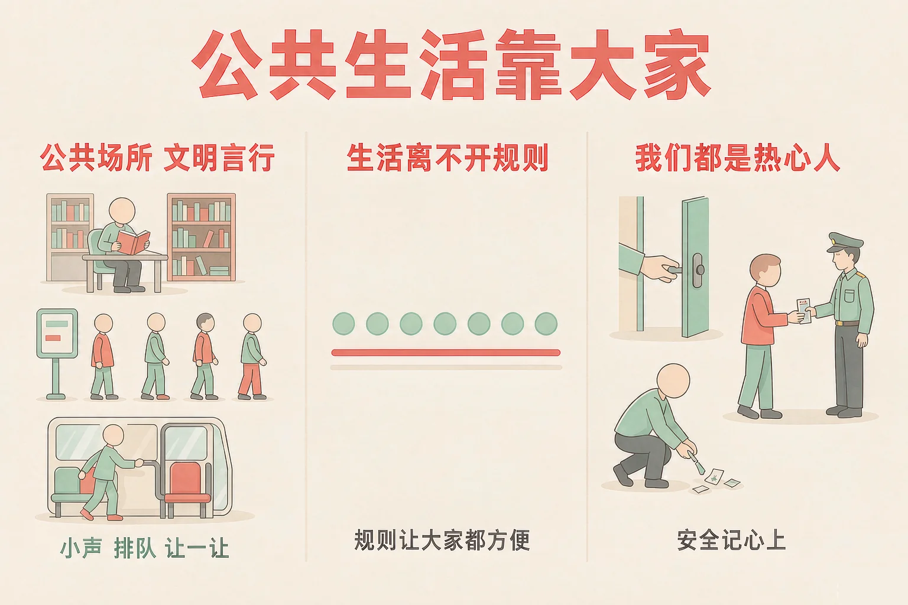
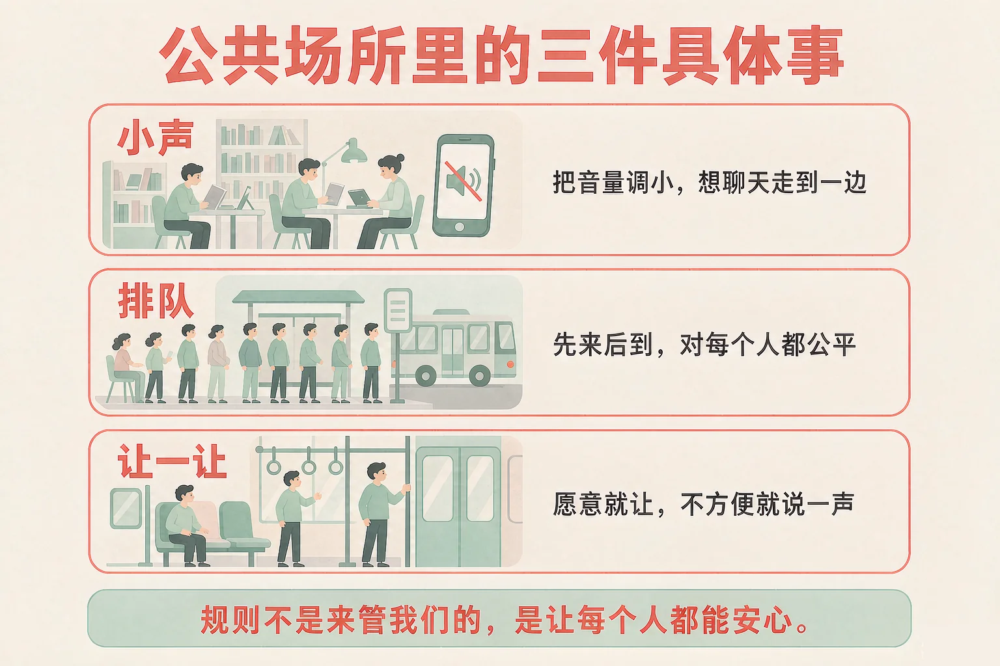
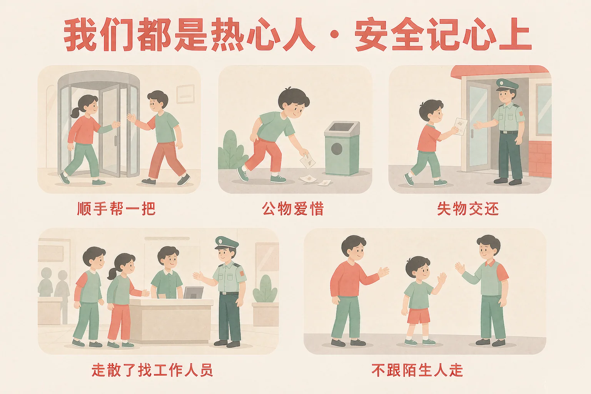

Gallery
v1.0.0 · skill v7.22.0
小学三年级 · 法治启蒙
在公共场所，怎样做才能让大家都方便、都安心？

选一个你真正想知道的问题，后面的活动都会围着它转。
选择或输入后，这节课会围绕你的问题展开。
先凭直觉选一个，选完立刻看到解释——错了也没关系，正好知道要重点听哪里。
1. 在图书馆看书时，想和同学说一道题，下面哪个做法更好？
在图书馆里，小声一点就是替别人着想。写在纸上、走到门外，题目照样能说清楚。错因提醒：常见错误是误认为「我声音不大就不算吵」——在很安静的地方，一点点声音别人也能听见。
2. 下面哪句话说得对？
排队、小声、让一让，这些做法让每个人都能用上这个地方。错因提醒：有的同学误认为「规则就是限制」——想一想要是没有排队，谁都上不了车。
3. 在商场里和家人走散了，下面哪个做法最合适？
站在原处，家人才找得到你；穿制服的工作人员是最可靠的求助对象。错因提醒：容易把「有人愿意帮忙」误认为「可以跟着他走」——先请工作人员打电话确认，这一步不能省。
为什么要学这一课？
我们每天都去这些地方：学校门口、公交车上、图书馆、公园、超市（And）；可是在这些地方，常常有人大声讲电话、从旁边挤上车、把脚搭在旁边的座位上，别人就不方便了（But）；所以我们要弄清楚一件事：规则不是来管我们的，是让每个人都能安心（Therefore）。
公共场所，就是大家一起去的地方。在家里你想怎么说话都行；到了这些地方，身边有很多不认识的人，做法就要换一换。

让座这件事，要说清楚
让座不是必须做的事，是你愿意做的好事。如果你自己也不舒服、也拿了很多东西，那就说明一下，或者帮着问一问身边的人能不能让一让——两种做法都很好，不用不好意思。
有的同学误认为「规则就是来限制我的，越少越自在」。可是一旦没有排队、没有小声，最先不方便的其实是排在后面的自己。规则真正管住的，是那些会让别人不方便的做法。
🔍 深层理解 换个角度再看一遍这件事，看看能不能说出背后的原理。
看见它：小声、排队、让一让，看着是三件事，其实是同一件事：先想一想身边还有别人。
解释它：为什么说规则不是限制？因为公共场所是大家共用的地方，一个人的方便常常就是另一个人的不方便——规则把这个分寸定清楚了。
迁移它：这个思路在家里也用得上：晚上家里人已经睡了，你会自动把声音放轻——这也是「先想一想身边还有别人」。
先点一件在公共场所里常常遇到的事，再从三个做法里选一个。选得好会告诉你为什么，选得不太合适也会告诉你还可以试试什么。
先点一件可能遇到的事。
热心人做的事，其实都很小。能做的就做一点，做不了的不勉强——这就是力所能及的公益活动。
顺手就能做的
帮后面进门的人扶一下门 · 看到纸屑弯一下腰 · 把捡到的校园卡、钥匙交给门卫 · 从自己的书架上挑一本还很好的书送去旧书捐赠。
爱护公物
公物是大家共用的：长椅、健身器材、图书、路灯、饮水机。用的时候像用自己家里的一样；坏了就告诉大人，不自己动手乱拆。

安全记心上：四条要记住的
第一，不跟陌生人走：有人说「你爸爸妈妈让我来接你」，先站在原地，找老师或穿制服的工作人员打电话确认。
第二，走散了不乱跑：站在原处，或者找服务台、保安、穿制服的工作人员。
第三，不碰公共场所的电气设备和护栏，不把手指伸进插座和门缝。
第四，发现危险先离开，再告诉大人。
有的同学误认为「做好事一定要做大事才算」。可是三年级能做的小事一大把：扶一下门、弯一下腰、把失物交回去——这些小事加在一起，公共场所就变得舒服多了。
🔍 深层理解 换个角度再看一遍这件事，看看能不能说出背后的原理。
看见它：「热心」不是喊出来的，是做出来的：一句话、一个弯腰、一趟交还失物，都很具体。
比较它：同样是看到别人乱扔垃圾：一种是当面说「你怎么这么不讲卫生」，一种是走过去说「我来帮你拿吧」——后者更容易让人愿意改。
迁移它：这套做法在小区里也用得上：楼道里有人乱放东西，先想一想是不是他实在没地方放，再决定怎么和大人说这件事。
先点一条做法，再点它应该进的筐：公共生活里该做的放一边，要调整的放另一边。
先在上面点一条做法。
情境：周末，小雨和同学去附近的公园。长椅旁边有不少纸屑，一个提示牌被碰倒在地上。他们决定做点什么。请你看看他们是怎么做的。
收尾也有讲究
走的时候把自己带来的东西都带走，座位擦一擦再离开。做公益不是做给别人看的，走的时候不留下新的麻烦，这件事才算做完。
有的同学误认为「热心就是当面指出别人不对」。可小雨换了一种做法：先说一句「我来帮你拿吧」——对方更容易接受，地上的瓶子也真的进了垃圾箱。
先凭直觉选一个，选完立刻看到解释——错了也没关系，正好知道要重点听哪里。
1. 下面哪句话说得对？
排队、小声、让一让，这些做法保护的是每一个用这个地方的人。错因提醒：常见错误是误认为「规则是对着我的」——想一想没有排队的时候，最先上不去车的是谁。
2. 在车厢里看到一位站不太稳的老人，下面哪个做法更好？
让座是愿意做的事，安静地让最能照顾对方的心情。错因提醒：有的同学误认为「不让座就是不好的孩子」——如果自己也不舒服，说明一下、帮着问一问，同样是在帮忙。
3. 看到公园里的健身器材有一颗螺丝松了，下面哪个做法更好？
自己动手修公共设施很危险，也可能修得更坏；告诉管理员才是对的做法。错因提醒：容易把「自己修一下更快」误认为「热心」——该大人做的事，就交给大人。
下面是九件三年级就能做的公益小事。点一点，选出三件，组成我们班的公益小计划；点错了再点一次就能取消。
我们班的公益小计划
先在上面点一件你想做的事。
选好之后，写一句话：
你为什么选这三件？打算什么时候做？写在下面。
先凭直觉选一个，选完立刻看到解释——错了也没关系，正好知道要重点听哪里。
1. 公交站上，排队的人已经站了一长串，车来了，下面哪个做法更好？
先来后到，对每个人都公平；上车后再看看有没有需要让一让的人。错因提醒：常见错误是误认为「抢一步不算什么」——一个人挤，整条队都会乱。
2. 在小区里看到长椅的一条腿有点松，坐上去会晃，下面哪个做法更好？
公共设施坏了，报告给管理的人最稳妥，也最安全。错因提醒：容易把「自己修一下更快」误认为「热心」——自己动手可能受伤，也可能让别人更危险。
3. 放学路上，一位不认识的叔叔说：「你妈妈让我来接你，跟我走吧。」下面哪个做法最合适？
知道名字不等于真的是家里人安排的，站在原地、找老师或工作人员确认最安全。错因提醒：有的同学误认为「人家说得这么清楚，应该没问题」——遇到这种情况，一定要先跟大人核实。
一句口诀：小声一点、顺着队排，公物爱惜、危险不碰。
给别人讲一遍：请用「小声、排队、让一让」这三个说法，说清楚你在公共场所会怎么做。
再动一动手：写一写你打算做的三件小事，写清做什么、什么时候做。
三层练习，做完第一、二层就算通关；第三层留给愿意继续探索的同学。
⭐ 基础巩固（必做）
⭐⭐ 能力应用（必做）
⭐⭐⭐ 迁移挑战（选做）
左边是学它之前要先会的，右边是学会之后可以继续探索的，下面是同一领域的伙伴知识。
图谱正在加载：首次进入需下载知识索引（约 1–3 秒），加载完成后本行会自动消失。